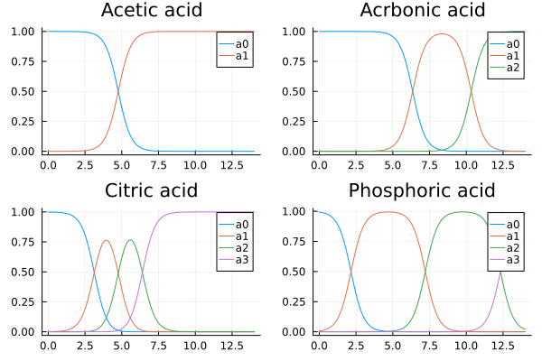

ChemicalBuffers Theory
The computation is based on the method described in https://www.mdpi.com/2624-8549/3/2/34
This is based on activities
$Kai = {H^+}{H{n-i}A^-}/{H_nA} $
Notes: (§1.2)
The present review follows the first approach: the hydrochemical approach (based on dissociation reactions with reference state HNA)
it is assumed that the activities (that enter the mass action laws) are replaced by molar concentrations, which is justified either for dilute systems or for non-dilute systems using conditional equilibrium constants
Central formula: n = Y1 + w/CT
Overview:
- §2.1: 1-component system
- §2.2: 3 component acid-base system
- §2.3: buffer capacities and intensities
- §2.4: auto proteolysis
- §2.5: perspectivation
- §3: Activities and concentrations?
- §4: zwitterions
- Appendix B: Effective concentrations: {j} = \gamma_j[j]
Notation
$[j] = [H{N-j}A^j] : Molar concentration of acid specis (2) CT = [HNA]T = \sum{j=0}^N j {j} = \gammajj : activity of acid species j x = {H^+} = 10^{-pH} (6) : activity of H+ Kw = {H^+}{OH^-} (7) Kw = 1.0E-14 @ 25C w(x) = [OH^-] - [H^+] = Kw/x - x/\gamaH (8) Ka = {H^+}{A^-}/{HA} (10) ^cKa = {H^+}[A^-]/HA pKa = -ln(Ka) (12) k0 = 1 kj = \Pi{i = 1}^j Ki = {H^+}^j{H{N-j}A^{-j}}/{HN A} (12) kj = x^j {j} / {0} {j} = kj/x^j {0} \forall j (14) CT = \sum [j] = [0] \sum{j=0}^N kj/x^j (15) mass ballance aj = [j]/C_T (16): ionization fractions $
Ionization function
We implement equation (17) as function ionization_fractions_gamma1 and define a plot recipe for BufferComponent using that:
using ChemicalBuffers
using Plots
plot(plot(acetic_acid), plot(carbonic_acid), plot(citric_acid), plot(phosphoric_acid))
Appendix
A similar approach is described in this answer: https://chemistry.stackexchange.com/questions/149282/how-to-numerically-model-a-phosphoric-acid-titration-curve/149285#149285 . An R implementation based on that can be found here: https://github.com/naikymen/titration
It is also the method used in https://www.egr.msu.edu/~scb-group-web/buffers/buffers.html and in the python library pHcalc https://github.com/rnelsonchem/pHcalc.
I have my own implementation of that here: https://github.com/tp2750/pHcalc.jl
There is now even a version in the registry: https://github.com/egonik-unlp/PHcalc.jl
Cut
https://chemistry.stackexchange.com/questions/149282/how-to-numerically-model-a-phosphoric-acid-titration-curve/149285#149285 .
This works for phosphoric acid and similar buffers, but perhaps not generally?
- Given pH and pKa values, we can compute the relative ratios of the protonation species.
- This implies how much metal ion is needed to get net charge zero.
- Given the total buffer strength, determines the actual concentration of the salts.
Actually, it is the activities, not the pKa values, see https://www.mdpi.com/2624-8549/3/2/34
$Kai = {H^+}{H{n-i}A^-}/{H_nA} $
Note: We should also apply this to large proteins.
Based on https://www.mdpi.com/2624-8549/3/2/34